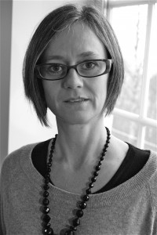

Det performative selv m/ Trine Falch og Camilla Eeg-Tverbakk - samarbeid med NOFF og NoDa
- Dato:
- 19.09.2013 til 20.09.2013
- Start kl :
- 10:00
- Slutt kl :
- 16:00
- Pris:
- 400,-
- Adresse:
- Norsk Skuespillersenter, Welhavensgate 1, Oslo
 Norsk Skuespillersenter og Norsk Fortellerforum (NOFF) fortsetter sin workshoprekke med tverrfaglige kurs myntet på profesjonelle skuespillere og fortellere, og nå har vi også Norske Dansekunstnere (NoDa) med oss som samarbeidspartner!
Norsk Skuespillersenter og Norsk Fortellerforum (NOFF) fortsetter sin workshoprekke med tverrfaglige kurs myntet på profesjonelle skuespillere og fortellere, og nå har vi også Norske Dansekunstnere (NoDa) med oss som samarbeidspartner!
Det er det performative selv som står i sentrum for workshopen:
Hva innebærer det å være seg selv på scenen? Hva er møtet med en tekst og en rolle fra dette utgangspunktet? Hvordan skape en relasjon med publikum? Hva er gevinsten ved en framføring som fokuserer mindre på teknikk, slik man ofte ser i performanceteater og fortellerkunst? Hva har dansere, fortellere, performancekunstnere og skuespillere til felles som scenekunstnere, og hvilke metoder kan de ta i bruk i sin formidling når de ikke er i rolle?
Kurset varer i to dager og ledes av to anerkjente utøvere og pedagoger fra det eksperimentelle teaterfeltet i Norge: Trine Falch og Camilla Eeg-Tverbakk. De leder en dag hver, der Trine Falch vil fokusere på praktiske øvelser med utgangspunkt i sitt eget virke som utøver, mens Camilla Eeg-Tverbakk vil arbeide i teori/praksis-feltet. Eeg-Tverbakk har fulgt Falchs kunstnerskap over mange år, og vil sette metodene som benyttes inn i en større sammenheng.
Dette er en strålende mulighet til faglig påfyll både praktisk og teoretisk!
Trine Falch er performancekunstner som var med å etablere Verdensteatret i 1986. Fra 1988-2007 var hun med i kunstnerkollektivet Baktruppen. Med base i den idébaserte scenekunsten har arbeidet omfattet performance, dans, billedkunst, performative foredrag, musikk, film, arkitektur, aksjoner og litteratur/tekst. Trine liker scenekunst som tar forgjengeligheten på alvor, og møter publikum ansikt til ansikt. Falch liker å iscenesette seg selv, språk og situasjoner i samspill med kontekstens iboende teatraliteter.
 Camilla Eeg-Tverbakk er utdannet skuespiller fra École Jacques Lecoq i Paris (1990-92) og arbeidet som utøvende scenekunstner og regissør i frimiljøet i Norge fram til 1997, da hun valgte å forfølge en akademisk karriere. Hun utdannet seg videre til kunst-teoretiker med blant annet en MA i Performance Studies fra New York University og MA i teatervitenskap fra UiO hvor hun skrev om Baktruppen. Fra 1996-99 var Eeg-Tverbakk kunstnerisk og daglig leder for Forum for Utveksling mellom Scenekunstnere (f.u.s.k.), hvor hun kuraterte og produserte festivaler og internasjonale gjestespill i Oslo. Hun var redaktør for boken Dans i samtiden (Spartacus 2006) og co-redaktør sammen med Knut Ove Arntzen for boken Performance Art by Baktruppen, first part (Kolon Forlan 2009). Hun var kunstnerisk leder for skuespillerlinja ved Akademi for Scenekunst ved Høgskolen i Østfold i perioden 2007-11, og er nå ansatt som stipendiat samme sted. Eeg-Tverbakk er virksom som dramaturg for regissører og koreografer.
{kind=link}
Pris for medlemmer av NOFF, NoDa og NSF: 300,-
Utvelgelse av deltakere vil skje på bakgrunn av CV, så husk å laste opp CV når du melder deg på. Husk også å fylle ut feltet for medlemskap i organisasjoner i påmeldingsskjemaet.